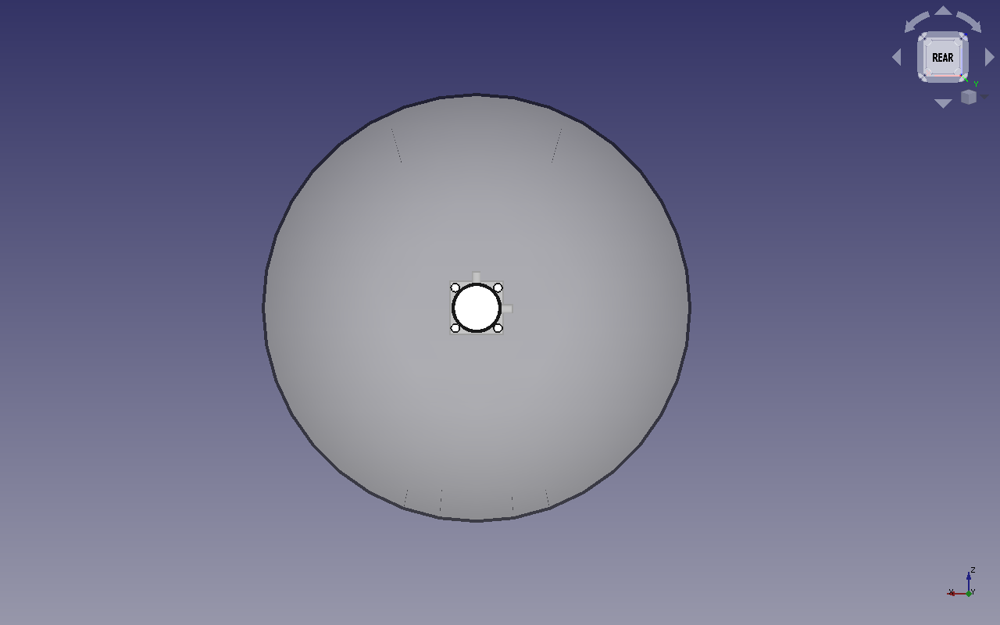
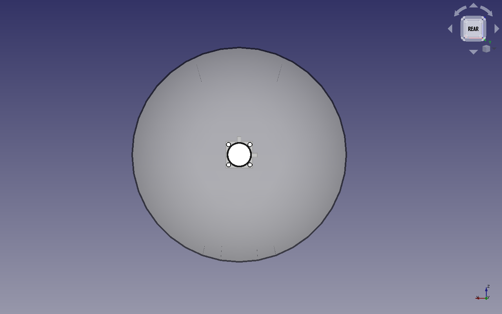
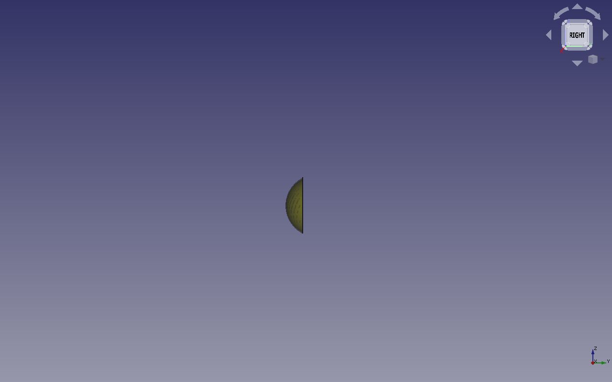
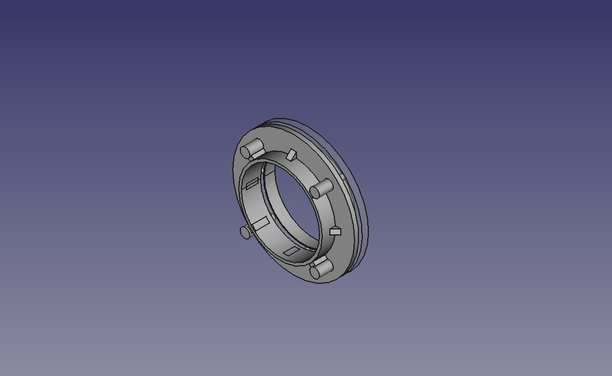
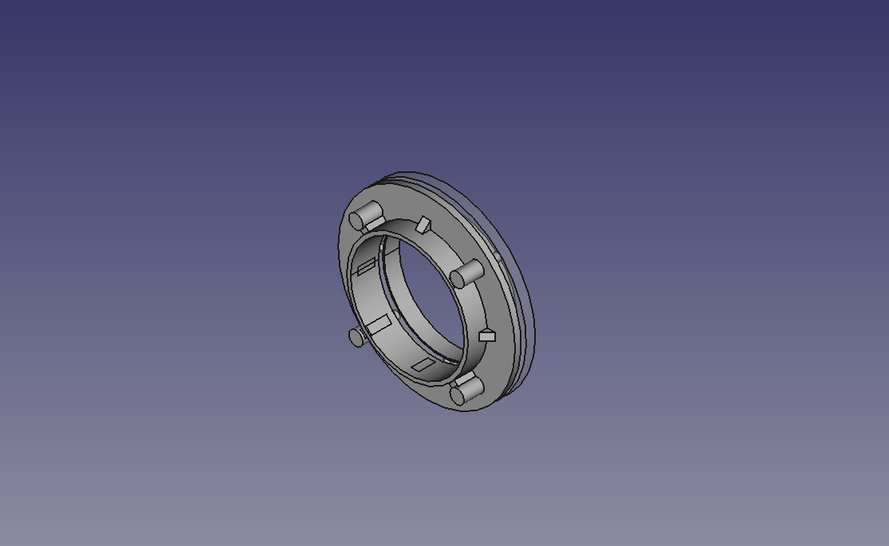

Directional antenna design
The present design aims to provide how to make a directional MiMo antenna for 5Ghz, capable of achieving a gain of 20dB to 25dB.

In this new iteration of the "Trompebolic" design, we used a 44mm waveguide with a reflector to illuminate the parabolic dish. We used a 40cm diameter and 8cm high parabolic dish as a mould, calculating the focus at 12.5cm from the centre.
 

Reflector.

Parabola support and handles.
 



Final design.


This project was funded through the User-Operated Internet fund, a fund established by NLnet made possible by financial support from the PKT Community The Network Steward and stichting Technology Commons Trust.
En cooperación con AlterMundi.